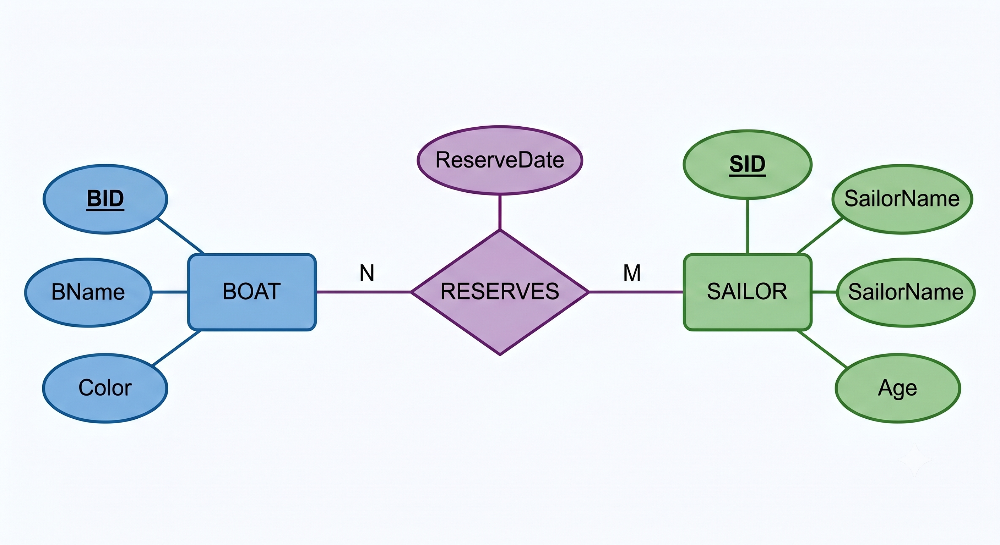
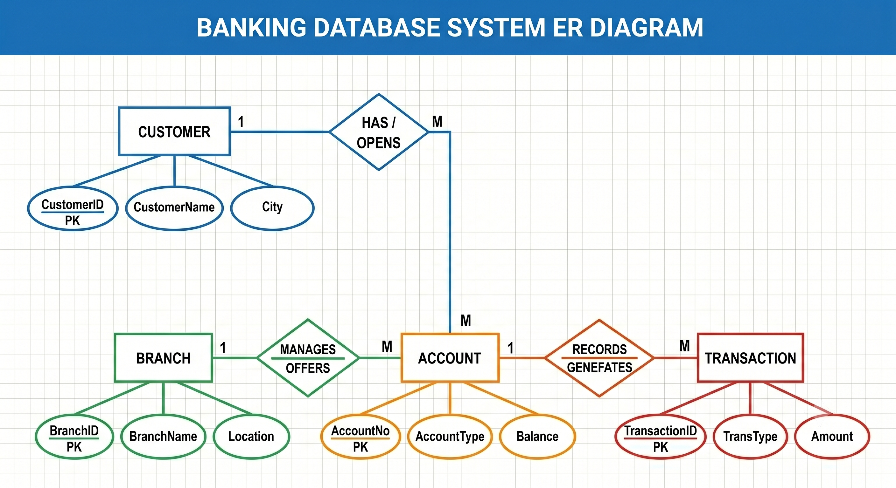

DATABASE MANAGEMENT SYSTEMS LABORATORY
Course Code: 24ISL47
Complete manual — Experiments 1 to 5 (Integrated SQL & NoSQL)
Tap an experiment row below to open.
| # | Title |
|---|---|
| Exp 1 | Employee – Department – Project (SQL, MongoDB & PL/SQL) |
| Exp 2 | Part – Supplier – Supply (SQL, MongoDB & PL/SQL) |
| Exp 3 | Boat – Sailor – Reserves (SQL, MongoDB & PL/SQL) |
| Exp 4 | Books – Student – Borrows (SQL, MongoDB & PL/SQL) |
| Exp 5 | Patient – Doctor – Appointment (SQL, MongoDB & PL/SQL) |
Source: compiled from DBMS_LAB/1.html … 5.html
DATABASE MANAGEMENT SYSTEMS LAB
Experiment 1 — Employee, Department & Project
PART A — Relational Database (SQL)
Aim
To design an Employee–Department–Project database, enforce constraints, create tables, insert sample data, and execute SQL queries.
Problem Statement
Consider an Employee with a social security number (SSN) working on multiple projects with definite hours for each. Each Employee belongs to a Department. Each project is associated with some domain areas such as Database, Cloud and so on. Each Employee will be assigned to some project. Assume the attributes for Employee and Project relations.
Constraints
- SSN is the Primary Key of Employee.
- DeptNo is the Primary Key of Department.
- ProjectNo is the Primary Key of Project.
- Each Employee belongs to one Department (represented by DeptNo as Foreign Key).
- Each Employee works on a Project (represented by ProjectNo as Foreign Key).
- Hours worked by an employee on a project must be positive (> 0).
ER Diagram

Schema Diagram
EMPLOYEE ( ssn [PK], name, deptno )
PROJECT ( projectno [PK], projectarea )
WORKS_ON ( ssn [FK], projectno [FK] )
Create Table Statements
create table Employee
(
ssn varchar(6),
name varchar(10),
deptno int,
primary key(ssn)
);
create table Project
(
projectno varchar(10),
projectarea varchar(20),
primary key(projectno)
);
create table Works_On
(
ssn varchar(6),
projectno varchar(10),
foreign key(ssn)references Employee(ssn),
foreign key(projectno)references Project(projectno)
);
Insert Sample Data
INSERT INTO Employee VALUES ('E101','Ravi',10);
INSERT INTO Employee VALUES ('E102','Anu',20);
INSERT INTO Employee VALUES ('E103','Kiran',30);
INSERT INTO Employee VALUES ('E104','Priya',10);
INSERT INTO Project VALUES (101,'Database');
INSERT INTO Project VALUES (102,'Cloud');
INSERT INTO Project VALUES (103,'Data Science');
INSERT INTO Works_On VALUES ('E101',101);
INSERT INTO Works_On VALUES ('E102',102);
INSERT INTO Works_On VALUES ('E103',101);
INSERT INTO Works_On VALUES ('E104',103);
Verify Table Insertion
select * from Employee;
| ssn | name | deptno |
|---|---|---|
| E101 | Ravi | 10 |
| E102 | Anu | 20 |
| E103 | Kiran | 30 |
| E104 | Priya | 10 |
select * from Project;
| projectno | projectarea |
|---|---|
| 101 | Database |
| 102 | Cloud |
| 103 | Data Science |
select * from Works_On;
| ssn | projectno |
|---|---|
| E101 | 101 |
| E102 | 102 |
| E103 | 101 |
| E104 | 103 |
Query i
Obtain the details of employees assigned to “Database” project.
SELECT E.*
FROM Employee E
JOIN Works_On W ON E.ssn = W.ssn
JOIN Project P ON W.projectno = P.projectno
WHERE P.projectarea = 'Database';
Output
| ssn | name | deptno |
|---|---|---|
| E101 | Ravi | 10 |
| E103 | Kiran | 30 |
Query ii
Find the number of employees working in each department with department details.
select deptno,count(ssn) as NumberofEmployees
from Employee
group by deptno;
Output
| deptno | NumberofEmployees |
|---|---|
| 10 | 2 |
| 20 | 1 |
| 30 | 1 |
Query iii
Update the Project details of Employee bearing SSN='E102' to ProjectNo=101 and display the same.
UPDATE Works_On
SET projectno = 101
WHERE SSN = 'E102';
SELECT * from Works_On;
Output
| ssn | projectno |
|---|---|
| E101 | 101 |
| E102 | 101 |
| E103 | 101 |
| E104 | 103 |
PART B — NoSQL (MongoDB) & Procedural SQL (PL/SQL)
Aim
To perform MongoDB operations on Employee and Department collections, and implement salary adjustment logic using a PL/SQL block in Oracle.
MongoDB Collections & Document Insertion
db.Employee.insertMany([
{ Emp_ID:101, Emp_Name:"Ravi", Dept_No:10, Salary:50000, Project_No:"P101"},
{ Emp_ID:102, Emp_Name:"Rani", Dept_No:20, Salary:60000, Project_No:"P102"},
{ Emp_ID:103, Emp_Name:"Kushal", Dept_No:10, Salary:55000, Project_No:"P101"}
]);
Output
{
acknowledged: true,
insertedIds: {
'0': ObjectId('6a20078bbc1cfd02008ce5af'),
'1': ObjectId('6a20078bbc1cfd02008ce5b0'),
'2': ObjectId('6a20078bbc1cfd02008ce5b1')
}
}
db.Department.insertMany([
{Dept_No:10, Dept_Name:"HR"},
{Dept_No:20, Dept_Name:"IT"}
]);
Output
{
acknowledged: true,
insertedIds: {
'0': ObjectId('6a20078cbc1cfd02008ce5b2'),
'1': ObjectId('6a20078cbc1cfd02008ce5b3')
}
}
MongoDB Query i
List all the employees of Department named "HR".
var dept=db.Department.findOne(
{Dept_Name:"HR"}
);
db.Employee.find(
{Dept_No:dept.Dept_No}
);
Expected Output
[
{
_id: ObjectId('6a20078bbc1cfd02008ce5af'),
Emp_ID: 101,
Emp_Name: 'Ravi',
Dept_No: 10,
Salary: 50000,
Project_No: 'P101'
},
{
_id: ObjectId('6a20078bbc1cfd02008ce5b1'),
Emp_ID: 103,
Emp_Name: 'Kushal',
Dept_No: 10,
Salary: 55000,
Project_No: 'P101'
}
]
MongoDB Query ii
Name the employees working on Project Number: "P101".
db.Employee.find(
{Project_No:"P101"},
{Emp_Name:1,_id:0}
);
Expected Output
[ { Emp_Name: 'Ravi' }, { Emp_Name: 'Kushal' } ]
PL/SQL Program
Write a PL/SQL program that gives all employees in Department 10 a 15% pay increase. Display a message displaying how many employees were awarded the increase.
Table Setup:
CREATE TABLE Employee (
Emp_ID NUMBER(5) PRIMARY KEY,
Emp_Name VARCHAR2(20),
Dept_No NUMBER(8),
Salary NUMBER(10)
);
INSERT INTO Employee VALUES (101, 'Ravi', 10, 50000);
INSERT INTO Employee VALUES (102, 'Anu', 20, 60000);
INSERT INTO Employee VALUES (103, 'Kiran', 10, 55000);
INSERT INTO Employee VALUES (104, 'Priya', 30, 45000);
COMMIT;
SELECT * FROM Employee;
Initial Employee Table Output
| EMP_ID | EMP_NAME | DEPT_NO | SALARY |
|---|---|---|---|
| 101 | Ravi | 10 | 50000 |
| 102 | Anu | 20 | 60000 |
| 103 | Kiran | 10 | 55000 |
| 104 | Priya | 30 | 45000 |
PL/SQL Block:
SET SERVEROUTPUT ON;
DECLARE
v_count NUMBER;
BEGIN
UPDATE Employee
SET Salary = Salary * 1.15
WHERE Dept_No = 10;
v_count := SQL%ROWCOUNT;
DBMS_OUTPUT.PUT_LINE(v_count || ' employees awarded 15% increase');
END;
/
SELECT * FROM Employee;
Execution Output
2 employees awarded 15% increase
Updated Employee Table Output
| EMP_ID | EMP_NAME | DEPT_NO | SALARY |
|---|---|---|---|
| 101 | Ravi | 10 | 57500 |
| 102 | Anu | 20 | 60000 |
| 103 | Kiran | 10 | 63250 |
| 104 | Priya | 30 | 45000 |
Result
The database operations in Oracle SQL, MongoDB, and PL/SQL salary updates were successfully executed and verified with expected outputs.
Viva Voce — Top 50 Questions & Answers
- What is a Database Management System (DBMS)?
A DBMS is system software that manages the creation, storage, retrieval, update, and deletion of data in databases, providing an interface between users and data. - What are the advantages of DBMS over traditional file systems?
DBMS provides data redundancy control, data consistency, data sharing, integrity constraints, security, backup & recovery, and concurrent access — none of which a flat-file system supports natively. - What is DDL? Give examples.
Data Definition Language (DDL) defines the database structure. Examples: CREATE, ALTER, DROP, TRUNCATE. - What is DML? Give examples.
Data Manipulation Language (DML) manipulates data stored in tables. Examples: SELECT, INSERT, UPDATE, DELETE. - What is a Primary Key?
A primary key is a column (or set of columns) that uniquely identifies each row in a table. It cannot contain NULL values and must be unique. - What is a Foreign Key?
A foreign key is a column in one table that references the primary key of another table, establishing a relationship between the two tables. - What is the difference between Primary Key and Unique Key?
A primary key cannot have NULLs and there can be only one per table. A unique key allows one NULL value and a table can have multiple unique keys. - What is an ER Diagram?
An Entity-Relationship Diagram is a graphical representation of entities, their attributes, and relationships among them in a database design. - What is an entity in the ER model?
An entity is a real-world object or concept that can be distinctly identified, e.g., Employee, Department, Project. - What is a relationship in the ER model?
A relationship is an association between two or more entities, e.g., an Employee BELONGS_TO a Department. - What is a strong entity vs a weak entity?
A strong entity has its own primary key and exists independently. A weak entity depends on a strong entity and uses a partial key along with the owner's key. - What are the types of attributes in the ER model?
Simple, Composite, Single-valued, Multi-valued, Derived, and Key attributes. - What is cardinality ratio?
Cardinality ratio specifies the number of relationship instances an entity can participate in: 1:1, 1:N, M:N. - What is participation constraint (total vs partial)?
Total participation means every entity instance must participate in the relationship. Partial means some may not participate. - What is the purpose of the CREATE TABLE statement?
CREATE TABLE defines a new table in the database, specifying column names, data types, and constraints. - What does the NOT NULL constraint do?
NOT NULL ensures that a column cannot have a NULL value — every row must contain a valid value for that column. - What is the CHECK constraint?
CHECK constraint validates that values in a column satisfy a specified Boolean condition, e.g., CHECK (Salary > 0). - What does ON DELETE CASCADE do?
When a referenced row in the parent table is deleted, ON DELETE CASCADE automatically deletes all matching rows in the child table. - What is the difference between DELETE and TRUNCATE?
DELETE removes specific rows (can use WHERE) and can be rolled back. TRUNCATE removes all rows instantly, cannot use WHERE, and is auto-committed. - What is a JOIN? Name its types.
JOIN combines rows from two or more tables based on a related column. Types: INNER JOIN, LEFT JOIN, RIGHT JOIN, FULL OUTER JOIN, CROSS JOIN. - What is an INNER JOIN?
INNER JOIN returns only the rows where there is a match in both tables on the join condition. - What is a LEFT OUTER JOIN?
LEFT JOIN returns all rows from the left table and matched rows from the right table. Non-matching right-side columns are filled with NULL. - What is the GROUP BY clause?
GROUP BY groups rows sharing a common value into summary rows, typically used with aggregate functions like COUNT, SUM, AVG. - What is the difference between WHERE and HAVING?
WHERE filters rows before grouping. HAVING filters groups after GROUP BY aggregation. - What does COUNT() function do?
COUNT() returns the number of rows matching a condition. COUNT(*) counts all rows; COUNT(column) counts non-NULL values. - What is the purpose of the COMMIT statement?
COMMIT permanently saves all changes made during the current transaction to the database. - What is the difference between CHAR and VARCHAR2?
CHAR stores fixed-length strings (padded with spaces). VARCHAR2 stores variable-length strings using only the space needed. - Explain the INSERT INTO syntax.
INSERT INTO table_name VALUES (val1, val2, ...) inserts a new row. Column names can be specified explicitly: INSERT INTO table(col1, col2) VALUES (val1, val2). - What is a composite key?
A composite key is a primary key made up of two or more columns that together uniquely identify a row, e.g., (SSN, ProjectNo) in WORKS_ON. - Can a table have multiple foreign keys?
Yes. For example, the Employee table has DeptNo as FK referencing Department and ProjectNo as FK referencing Project. - What is referential integrity?
Referential integrity ensures that a foreign key value always refers to an existing primary key value in the referenced table, or is NULL. - What is the UPDATE statement used for?
UPDATE modifies existing data in a table. Syntax: UPDATE table SET column = value WHERE condition. - What is a subquery?
A subquery is a query nested inside another query (in SELECT, WHERE, or FROM clause) that provides intermediate results to the outer query. - What is the difference between UNION and UNION ALL?
UNION combines results of two SELECT queries and removes duplicates. UNION ALL keeps all rows including duplicates. - What is the three-schema architecture?
ANSI-SPARC architecture has three levels: External (user views), Conceptual (logical structure), and Internal (physical storage). - What is MongoDB?
MongoDB is a NoSQL, document-oriented database that stores data in flexible JSON-like BSON documents instead of rows and columns. - What is a document in MongoDB?
A document is a single record in MongoDB stored as a BSON (Binary JSON) object with key-value pairs, similar to a row in RDBMS. - What is a collection in MongoDB?
A collection is a group of related documents in MongoDB, analogous to a table in a relational database. - What does insertMany() do in MongoDB?
insertMany() inserts multiple documents into a collection at once, accepting an array of document objects. - What does find() do in MongoDB?
find() retrieves documents from a collection that match a given filter. Without arguments, it returns all documents. - What does findOne() do in MongoDB?
findOne() returns the first document that matches the filter criteria, or null if no match is found. - What is the _id field in MongoDB?
_id is an auto-generated unique identifier (ObjectId) assigned to every document if not explicitly provided. It acts as the primary key. - What is PL/SQL?
PL/SQL (Procedural Language/SQL) is Oracle's procedural extension to SQL, supporting variables, conditions, loops, and exception handling. - What is the structure of a PL/SQL block?
DECLARE (optional variables), BEGIN (executable statements), EXCEPTION (error handling), END; — followed by / to execute. - What is DBMS_OUTPUT.PUT_LINE used for?
It is a built-in procedure to display output messages on the console in Oracle SQL*Plus or SQL Developer. - What is SQL%ROWCOUNT?
SQL%ROWCOUNT is an implicit cursor attribute that returns the number of rows affected by the most recent DML statement. - What is the difference between SQL and PL/SQL?
SQL is a declarative query language for data operations. PL/SQL is a procedural extension that adds control flow (IF, LOOP), variables, and exception handling around SQL. - What does SET SERVEROUTPUT ON do?
It enables the display of DBMS_OUTPUT.PUT_LINE messages in the SQL*Plus or SQL Developer console. - What is the DECLARE section in PL/SQL?
DECLARE is used to define variables, constants, cursors, and user-defined exceptions before the BEGIN block. - Can we use DML statements inside PL/SQL?
Yes. INSERT, UPDATE, DELETE, and SELECT INTO can all be used inside a PL/SQL BEGIN...END block.
DATABASE MANAGEMENT SYSTEMS LAB
Experiment 2 — Part, Supplier & Shipment
PART A — Relational Database (SQL)
Aim
To design and implement Part, Supplier, and Shipment (Supply) relations, enforce integrity constraints, and execute SQL queries using Oracle SQL.
Problem Statement
Consider the relations: PART, SUPPLIER and SUPPLY. The Supplier relation holds information about suppliers. The attributes SID, SNAME, SADDR describe the supplier. The Part relation holds the attributes such as PID, PNAME and PCOLOR. The Shipment relation holds information about shipments that include SID and PID attributes identifying the supplier of the shipment and the part shipped, respectively. The Shipment relation should contain information on the number of parts shipped.
Constraints
- SID is the Primary Key of Supplier.
- PID is the Primary Key of Part.
- (SID, PID) is the composite Primary Key of Shipment.
- SID in Shipment references Supplier(SID).
- PID in Shipment references Part(PID).
- Shipment Quantity (Qty) must be positive (> 0).
ER Diagram

Schema Diagram
PART ( pno [PK], pname, colour )
SUPPLIER ( sno [PK], sname, address )
SUPPLY ( pno [PK, FK], sno [PK, FK], quantity )
Create Table Statements
create table part
(
pno number(10),
pname varchar(20),
colour varchar(20),
primary key(pno)
);
create table supplier
(
sno number(10),
sname varchar(20),
address varchar(20),
primary key(sno)
);
create table supply
(
pno number(10),
sno number(10),
quantity varchar(20),
primary key(pno,sno),
foreign key(pno) references part(pno)on delete cascade,
foreign key(sno) references supplier(sno)on delete cascade
);
Insert Sample Data
insert into part values(1,'plug','black');
insert into part values(2,'bolt','blue');
insert into part values(3,'nut','green');
insert into supplier values(10,'Anoop','udupi');
insert into supplier values(15,'Bharath','mangalore');
insert into supplier values(20,'Ram','bangalore');
insert into supply values(1,10,50);
insert into supply values(2,10,30);
insert into supply values(1,15,70);
insert into supply values(3,15,40);
insert into supply values(1,20,55);
insert into supply values(2,20,65);
insert into supply values(3,20,75);
Verify Table Insertion
select * from part;
| PNO | PNAME | COLOUR |
|---|---|---|
| 1 | plug | black |
| 2 | bolt | blue |
| 3 | nut | green |
select * from supplier;
| SNO | SNAME | ADDRESS |
|---|---|---|
| 10 | Anoop | udupi |
| 15 | Bharath | mangalore |
| 20 | Ram | bangalore |
select * from supply;
| PNO | SNO | QUANTITY |
|---|---|---|
| 1 | 10 | 50 |
| 2 | 10 | 30 |
| 1 | 15 | 70 |
| 3 | 15 | 40 |
| 1 | 20 | 55 |
| 2 | 20 | 65 |
| 3 | 20 | 75 |
Query i
Obtain the part identifiers of parts supplied by supplier 'Ram'.
select pno from supply
where sno IN(select sno from supplier where sname='Ram');
Output
| PNO |
|---|
| 1 |
| 2 |
| 3 |
Query ii
Obtain the Names of suppliers who supply 'bolt'.
select sname,pname
from supplier,supply,part
where pname='bolt' AND supply.sno=supplier.sno AND part.pno=supply.pno;
Output
| SNAME | PNAME |
|---|---|
| Anoop | bolt |
| Ram | bolt |
Query iii
Delete the parts which are in 'green' color.
delete from part where colour='green';
Output
1 row deleted.
PART B — NoSQL (MongoDB) & Procedural SQL (PL/SQL)
Aim
To perform MongoDB operations on Part and Supplier collections, and implement record copying using a PL/SQL block in Oracle.
MongoDB Collections & Document Insertion
db.Part.insertMany([
{PID:"P1", PName:"Bolt", Price:20},
{PID:"P2", PName:"Nut", Price:10}
]);
Output
{
acknowledged: true,
insertedIds: {
'0': ObjectId('6a2157e7346482d7de8ce5af'),
'1': ObjectId('6a2157e7346482d7de8ce5b0')
}
}
db.Supplier.insertMany([
{SID:1,SName:"ABC Suppliers",PID:"P1"},
{SID:2,SName:"XYZ Suppliers",PID:"P1"},
{SID:3,SName:"Global Parts",PID:"P2"}
]);
Output
{
acknowledged: true,
insertedIds: {
'0': ObjectId('6a215845c53bedb60c8ce5b1'),
'1': ObjectId('6a215845c53bedb60c8ce5b2'),
'2': ObjectId('6a215845c53bedb60c8ce5b3')
}
}
MongoDB Query i
Update the details of parts for a given part identifier: "P1".
db.Part.updateOne(
{PID:"P1"},
{$set:{Price:25}}
);
Expected Output
{
acknowledged: true,
insertedId: null,
matchedCount: 1,
modifiedCount: 1,
upsertedCount: 0
}
MongoDB Query ii
Display all suppliers who supply the part with part identifier: "P1".
db.Supplier.find(
{PID:"P1"},
{SName:1,_id:0}
);
Expected Output
[ { SName: 'ABC Suppliers' }, { SName: 'XYZ Suppliers' } ]
PL/SQL Program
Write a PL/SQL program to copy the contents of the Shipment table to another table for maintaining records for specific part number.
Table Setup:
CREATE TABLE Shipment (
SID NUMBER(5),
PID VARCHAR2(5),
Qty NUMBER(5)
);
CREATE TABLE Shipment_Backup (
SID NUMBER(5),
PID VARCHAR2(5),
Qty NUMBER(5)
);
INSERT INTO Shipment VALUES (101,'P1',50);
INSERT INTO Shipment VALUES (102,'P2',40);
INSERT INTO Shipment VALUES (103,'P1',30);
INSERT INTO Shipment VALUES (104,'P3',20);
COMMIT;
SELECT * FROM Shipment;
Initial Shipment Table Output
| SID | PID | QTY |
|---|---|---|
| 101 | P1 | 50 |
| 102 | P2 | 40 |
| 103 | P1 | 30 |
| 104 | P3 | 20 |
PL/SQL Block:
SET SERVEROUTPUT ON;
BEGIN
INSERT INTO Shipment_Backup
SELECT *
FROM Shipment
WHERE PID='P1';
DBMS_OUTPUT.PUT_LINE('Records copied successfully');
END;
/
SELECT * FROM Shipment_Backup;
Execution Output
Records copied successfully
Shipment Backup Table Output
| SID | PID | QTY |
|---|---|---|
| 101 | P1 | 50 |
| 103 | P1 | 30 |
Result
The tables were created and queried in SQL, parts were updated and matched in MongoDB, and the PL/SQL program successfully copied records to the backup table.
Viva Voce — Top 50 Questions & Answers
- What is a composite primary key?
A composite primary key is a primary key composed of two or more columns that together uniquely identify each row, e.g., (SID, PID) in Shipment. - Why do we use a composite key in the Shipment table?
Because a single supplier can supply multiple parts and a single part can be supplied by multiple suppliers — neither SID nor PID alone is unique in Shipment. - What is referential integrity constraint?
It ensures that a foreign key value in a child table must match an existing primary key value in the parent table, or be NULL. - What does ON DELETE CASCADE mean?
When a parent row is deleted, all child rows referencing it are automatically deleted to maintain referential integrity. - What happens to Shipment rows when a Supplier is deleted with CASCADE?
All Shipment rows that reference the deleted Supplier's SID are automatically removed from the Shipment table. - What is the difference between DELETE and DROP?
DELETE removes specific rows from a table (data only). DROP removes the entire table structure along with all its data from the database. - What is a schema diagram?
A schema diagram shows all tables with their columns, data types, primary keys, and foreign key relationships in a compact notation. - What are the different categories of SQL commands?
DDL (CREATE, ALTER, DROP), DML (SELECT, INSERT, UPDATE, DELETE), DCL (GRANT, REVOKE), TCL (COMMIT, ROLLBACK, SAVEPOINT). - What is DCL? Give examples.
Data Control Language controls access privileges. GRANT gives permissions; REVOKE takes them away. - What is TCL? Give examples.
Transaction Control Language manages transactions. Examples: COMMIT (save), ROLLBACK (undo), SAVEPOINT (checkpoint). - What does ROLLBACK do?
ROLLBACK undoes all changes made in the current transaction, reverting the database to its state at the last COMMIT. - What is SAVEPOINT?
SAVEPOINT sets a named point within a transaction to which you can later ROLLBACK without undoing the entire transaction. - What is data integrity?
Data integrity ensures the accuracy, consistency, and reliability of data stored in the database through constraints and validation rules. - What are the types of integrity constraints in SQL?
Domain constraint, Key constraint, Entity integrity (no NULL PKs), Referential integrity (valid FKs), and CHECK constraints. - What is a domain constraint?
A domain constraint restricts the set of allowed values for a column, such as data type, range (CHECK), or enumerated values. - What is entity integrity constraint?
Entity integrity states that the primary key of a table cannot contain NULL values — every row must be uniquely identifiable. - What is a natural join?
A natural join automatically joins two tables on columns with the same name and compatible data types, removing duplicate columns. - What is an equi-join?
An equi-join uses the equality operator (=) to match column values between two tables in the ON or WHERE clause. - What is a self-join?
A self-join joins a table with itself, using table aliases to treat it as two separate tables — useful for hierarchical data. - What is a cross join (Cartesian product)?
A cross join returns every possible combination of rows from two tables — if table A has m rows and B has n rows, result has m×n rows. - What is the purpose of the DISTINCT keyword?
DISTINCT eliminates duplicate rows from the result set of a SELECT query. - What is an alias in SQL?
An alias is a temporary name given to a table or column using the AS keyword, improving query readability. - What is the ORDER BY clause?
ORDER BY sorts the result set by one or more columns in ascending (ASC, default) or descending (DESC) order. - What is a view in SQL?
A view is a virtual table based on a SELECT query. It does not store data physically but presents a customized perspective of existing tables. - Can we perform INSERT on a view?
Yes, if the view is based on a single table, does not use aggregates, DISTINCT, GROUP BY, or JOINs — it must be an updatable view. - What is the ALTER TABLE statement?
ALTER TABLE modifies an existing table structure — adding, dropping, or modifying columns and constraints. - How do you add a new column to a table?
ALTER TABLE table_name ADD (column_name datatype); e.g., ALTER TABLE Supplier ADD (Phone VARCHAR2(15)); - How do you drop a column from a table?
ALTER TABLE table_name DROP COLUMN column_name; e.g., ALTER TABLE Part DROP COLUMN PColor; - What is a sequence in Oracle?
A sequence is a database object that generates unique sequential numbers, often used for auto-incrementing primary keys. - What is the difference between BETWEEN and IN?
BETWEEN checks if a value falls within a range (inclusive). IN checks if a value matches any item in a specified list. - What does the LIKE operator do?
LIKE performs pattern matching using wildcards: % (any sequence of characters) and _ (single character). - What are wildcards in SQL?
% matches zero or more characters; _ matches exactly one character. Used with LIKE in WHERE clause for pattern matching. - What is MongoDB's equivalent of a table?
A collection. Collections hold documents (records) and are analogous to tables in relational databases. - What is the difference between SQL and NoSQL databases?
SQL databases are relational with fixed schemas and use SQL. NoSQL databases are non-relational, schema-flexible, and use various query mechanisms (document, key-value, graph). - What does updateOne() do in MongoDB?
updateOne() modifies the first document matching the filter criteria with the specified update operations. - What is the $set operator in MongoDB?
$set updates the value of a specific field. If the field doesn't exist, $set creates it. Other fields remain unchanged. - Can MongoDB store nested documents?
Yes. MongoDB supports embedding documents within documents (sub-documents), enabling hierarchical data storage. - What is BSON?
BSON (Binary JSON) is the binary-encoded format MongoDB uses to store documents. It supports additional data types like Date and ObjectId beyond standard JSON. - What is the difference between find() and findOne()?
find() returns a cursor to all matching documents. findOne() returns only the first matching document as a single object. - How do you delete a document in MongoDB?
Use deleteOne({filter}) to remove one matching document, or deleteMany({filter}) to remove all matching documents. - What does acknowledged: true mean in MongoDB output?
It means the write operation was acknowledged by the MongoDB server and successfully processed. - What is the BEGIN...END block in PL/SQL?
BEGIN...END encloses the executable statements of a PL/SQL block. All DML and procedural logic goes between these keywords. - How do you copy data from one table to another in SQL?
INSERT INTO target_table SELECT * FROM source_table WHERE condition; — this copies matching rows from source to target. - What is INSERT INTO...SELECT?
It inserts rows into a table by selecting data from another table, combining INSERT and SELECT in one statement. - What is the difference between implicit and explicit cursors?
Implicit cursors are auto-created by Oracle for single-row queries (SELECT INTO) and DML. Explicit cursors are user-defined for multi-row query processing. - What is an exception in PL/SQL?
An exception is a runtime error condition. PL/SQL handles them in the EXCEPTION block using WHEN exception_name THEN handler. - Name some predefined exceptions in PL/SQL.
NO_DATA_FOUND, TOO_MANY_ROWS, ZERO_DIVIDE, DUP_VAL_ON_INDEX, VALUE_ERROR, INVALID_CURSOR. - What are the advantages of PL/SQL over plain SQL?
PL/SQL adds procedural logic (IF, LOOP), variables, exception handling, modularity (procedures/functions), and reduces network traffic by executing blocks on the server. - What is a stored procedure?
A stored procedure is a named PL/SQL block stored in the database that can be called repeatedly, accepts parameters, and improves performance. - What is the difference between a procedure and a function in PL/SQL?
A function must return a value using RETURN and can be used in SQL expressions. A procedure does not return a value and is called standalone using EXEC or CALL.
DATABASE MANAGEMENT SYSTEMS LAB
Experiment 3 — Boat, Sailor & Reserves
PART A — Relational Database (SQL)
Aim
To design and implement Boat, Sailor, and Reserves relations, enforce constraints, and execute SQL queries using Oracle SQL.
Problem Statement
Consider the relations BOAT, SAILOR and RESERVES. The relation BOAT identifies the features of a boat such as unique identifier, color and a name. The list of sailors with attributes such as SailorID, name, age etc., are stored in the relation SAILOR. The sailors are allowed to reserve any number of boats on any day of the week and the records are to be updated in the RESERVES table.
Constraints
- BID is the Primary Key of Boat.
- SailorID is the Primary Key of Sailor.
- (SailorID, BID, Day) is the composite Primary Key of Reserves.
- SailorID in Reserves references Sailor(SailorID).
- BID in Reserves references Boat(BID).
- Age of a sailor must be greater than or equal to 18.
ER Diagram

Schema Diagram
SAILOR ( SailorID [PK], Name, Age )
BOAT ( BID [PK], BoatName, Color )
RESERVES ( SailorID [PK, FK], BID [PK, FK], Day [PK] )
Create Table Statements
CREATE TABLE SAILOR (
SailorID INT PRIMARY KEY,
Name VARCHAR(50),
Age INT CHECK (Age > 0)
);
CREATE TABLE BOAT (
BID INT PRIMARY KEY,
BoatName VARCHAR(50),
Color VARCHAR(20)
);
CREATE TABLE RESERVES (
SailorID INT,
BID INT,
Day DATE,
PRIMARY KEY (SailorID, BID, Day),
FOREIGN KEY (SailorID) REFERENCES SAILOR(SailorID),
FOREIGN KEY (BID) REFERENCES BOAT(BID)
);
Insert Sample Data
INSERT INTO SAILOR VALUES (1, 'Ravi', 25);
INSERT INTO SAILOR VALUES (2, 'Meena', 30);
INSERT INTO SAILOR VALUES (3, 'Arun', 28);
INSERT INTO BOAT VALUES (101, 'Sea Queen', 'Red');
INSERT INTO BOAT VALUES (102, 'Wave Rider', 'Blue');
INSERT INTO BOAT VALUES (103, 'Ocean Star', 'Green');
INSERT INTO RESERVES VALUES (1, 101, '20-APR-2001');
INSERT INTO RESERVES VALUES (1, 102, '20-APR-2002');
INSERT INTO RESERVES VALUES (2, 101, '21-APR-2001');
INSERT INTO RESERVES VALUES (2, 102, '22-APR-2004');
INSERT INTO RESERVES VALUES (3, 101, '26-APR-2003');
Query i
Obtain the details of the boats reserved by 'Ravi'.
SELECT B.*
FROM BOAT B
JOIN RESERVES R ON B.BID = R.BID
JOIN SAILOR S ON S.SailorID = R.SailorID
WHERE S.Name = 'Ravi';
Output
| BID | BOATNAME | COLOR |
|---|---|---|
| 101 | Sea Queen | Red |
| 102 | Wave Rider | Blue |
Query ii
Retrieve the BID of the boats reserved necessarily by all the sailors.
SELECT BID
FROM RESERVES
GROUP BY BID
HAVING COUNT(DISTINCT SailorID) = (SELECT COUNT(*) FROM SAILOR);
Output
| BID |
|---|
| 101 |
Query iii
Find the number of boats reserved by each sailor. Display the Sailor_Name along with the number of boats reserved.
SELECT S.Name, COUNT(R.BID) AS TotalBoats
FROM SAILOR S
LEFT JOIN RESERVES R ON S.SailorID = R.SailorID
GROUP BY S.Name;
Output
| NAME | TOTALBOATS |
|---|---|
| Arun | 1 |
| Meena | 2 |
| Ravi | 2 |
PART B — NoSQL (MongoDB) & Procedural SQL (PL/SQL)
Aim
To perform MongoDB operations on Sailor, Boat, and Reserve collections, and implement count logic using a PL/SQL block in Oracle.
MongoDB Collections & Document Insertion
db.Sailor.insertMany([
{SID:1,SName:"Ramesh"},
{SID:2,SName:"Suresh"}
]);
Output
{
acknowledged: true,
insertedIds: {
'0': ObjectId('6a2159745fdbac8b848ce5af'),
'1': ObjectId('6a2159745fdbac8b848ce5b0')
}
}
db.Boat.insertMany([
{BID:101,BName:"Sea King",Color:"Red"},
{BID:102,BName:"Ocean Star",Color:"Blue"}
]);
Output
{
acknowledged: true,
insertedIds: {
'0': ObjectId('6a2159a5a394a68ce18ce5b1'),
'1': ObjectId('6a2159a5a394a68ce18ce5b2')
}
}
db.Reserve.insertMany([
{SID:1,BID:101},
{SID:1,BID:102},
{SID:2,BID:102}
]);
Output
{
acknowledged: true,
insertedIds: {
'0': ObjectId('6a2159daa3049e238d8ce5b3'),
'1': ObjectId('6a2159daa3049e238d8ce5b4'),
'2': ObjectId('6a2159daa3049e238d8ce5b5')
}
}
MongoDB Query i
Obtain the number of boats reserved by sailor "Ramesh".
var sailor=db.Sailor.findOne(
{SName:"Ramesh"}
);
db.Reserve.countDocuments(
{SID:sailor.SID}
);
Expected Output
2
MongoDB Query ii
Retrieve boats of color "Blue".
db.Boat.find(
{Color:"Blue"}
);
Expected Output
[
{
_id: ObjectId('6a215a462dbc9d54be8ce5b2'),
BID: 102,
BName: 'Ocean Star',
Color: 'Blue'
}
]
PL/SQL Program
Write a PL/SQL program to Count the number of boats.
Table Setup:
CREATE TABLE Boat (
BID NUMBER(5) PRIMARY KEY,
BName VARCHAR2(30),
Color VARCHAR2(20)
);
INSERT INTO Boat VALUES (1,'BoatA','Red');
INSERT INTO Boat VALUES (2,'BoatB','Blue');
INSERT INTO Boat VALUES (3,'BoatC','Green');
COMMIT;
SELECT * FROM Boat;
Initial Boat Table Output
| BID | BNAME | COLOR |
|---|---|---|
| 1 | BoatA | Red |
| 2 | BoatB | Blue |
| 3 | BoatC | Green |
PL/SQL Block:
SET SERVEROUTPUT ON;
DECLARE
v_count NUMBER;
BEGIN
SELECT COUNT(*)
INTO v_count
FROM Boat;
DBMS_OUTPUT.PUT_LINE('Total Boats = ' || v_count);
END;
/
Execution Output
Total Boats = 3
Result
The boat reservation database was designed and queried successfully in Oracle SQL and MongoDB, and the PL/SQL program successfully returned the total count of boats.
Viva Voce — Top 50 Questions & Answers
- What is a ternary composite primary key?
A primary key composed of three columns, e.g., (SailorID, BID, Day) in Reserves, meaning the combination of all three uniquely identifies each row. - Why is (SailorID, BID, Day) used as the composite PK in Reserves?
Because the same sailor can reserve the same boat on different days — all three columns together are needed to ensure uniqueness. - What is a CHECK constraint? Give an example from this experiment.
CHECK validates column values against a condition. Example: CHECK (Age >= 18) ensures no sailor under 18 is inserted. - What is the DATE data type in Oracle?
DATE stores date and time information (year, month, day, hour, minute, second). It occupies 7 bytes of storage. - How do you insert a DATE literal in Oracle?
Use the DATE keyword with ISO format: DATE '2025-01-10', or use TO_DATE('10-JAN-25', 'DD-MON-YY'). - What is the relational division operation?
Division finds tuples in one relation that are associated with ALL tuples in another relation. It answers queries like "boats reserved by ALL sailors". - How is division implemented in SQL?
Using GROUP BY with HAVING COUNT(DISTINCT col) = (SELECT COUNT(*) FROM other_table) — checking that the count matches the total. - What does HAVING COUNT(DISTINCT SailorID) = (SELECT COUNT(*) FROM Sailor) do?
It finds BIDs where the number of distinct sailors who reserved that boat equals the total number of sailors — implementing division. - What is the difference between COUNT(*) and COUNT(column)?
COUNT(*) counts all rows including NULLs. COUNT(column) counts only non-NULL values in that column. - What is a correlated subquery?
A subquery that references columns from the outer query and is re-evaluated for each row of the outer query. - What is the difference between IN and EXISTS?
IN checks if a value is in a result set (value comparison). EXISTS checks if the subquery returns at least one row (boolean check). EXISTS is often faster for large datasets. - What is the purpose of LEFT JOIN in counting boats per sailor?
LEFT JOIN ensures sailors with zero reservations still appear in the result with a count of 0, unlike INNER JOIN which would exclude them. - What does GROUP BY do in SQL?
GROUP BY groups rows with identical values in specified columns into summary rows, enabling aggregate functions to operate on each group. - Can we use aggregate functions without GROUP BY?
Yes, but the aggregate will compute over the entire result set as one group, returning a single row. - What is the significance of CHECK(Rating >= 1 AND Rating <= 10)?
It restricts the Rating column to values between 1 and 10 inclusive, ensuring data validity at the database level. - What happens when a Boat is deleted with ON DELETE CASCADE on Reserves?
All reservation records in Reserves referencing that deleted Boat's BID are automatically removed. - What is the difference between DATE and TIMESTAMP in Oracle?
DATE stores date + time to the second. TIMESTAMP extends this with fractional seconds (up to nanosecond precision) and optional timezone. - What is SYSDATE in Oracle?
SYSDATE is a built-in function that returns the current date and time of the database server. - What is the TO_DATE function?
TO_DATE converts a character string to a DATE value using a specified format mask, e.g., TO_DATE('10-01-2025', 'DD-MM-YYYY'). - What is the TO_CHAR function?
TO_CHAR converts a date or number to a formatted character string, e.g., TO_CHAR(SYSDATE, 'DD-MON-YYYY'). - Can a sailor reserve the same boat on the same day twice?
No. The composite PK (SailorID, BID, Day) prevents duplicate entries for the same combination. - What is normalization?
Normalization is the process of organizing database tables to minimize redundancy and dependency by dividing tables and defining relationships. - What is First Normal Form (1NF)?
A table is in 1NF if all column values are atomic (no repeating groups or arrays), and each row is unique. - What is Second Normal Form (2NF)?
A table is in 2NF if it is in 1NF and every non-key attribute is fully functionally dependent on the entire primary key (no partial dependencies). - What is Third Normal Form (3NF)?
A table is in 3NF if it is in 2NF and no non-key attribute is transitively dependent on the primary key. - What is BCNF (Boyce-Codd Normal Form)?
BCNF is a stricter version of 3NF where every determinant (left side of an FD) must be a candidate key. - Is the Reserves table in 3NF?
Yes. All attributes are part of the primary key (SailorID, BID, Day), so there are no non-key attributes to violate 2NF or 3NF. - What is a functional dependency?
A functional dependency X → Y means that for each value of X, there is exactly one associated value of Y. - What is a candidate key?
A candidate key is a minimal set of attributes that can uniquely identify every tuple in a relation. A table can have multiple candidate keys. - What is a super key?
A super key is any set of attributes that uniquely identifies tuples. Every candidate key is a super key, but not vice versa. - What does countDocuments() do in MongoDB?
countDocuments() returns the count of documents matching a specified filter in a collection. - How is countDocuments() different from count()?
countDocuments() performs an actual scan and gives accurate counts. count() (deprecated) may return approximate counts from metadata. - What is projection in MongoDB find()?
The second argument to find() specifies which fields to include (1) or exclude (0) in the results, e.g., { SName: 1, _id: 0 }. - What does { _id: 0 } do in MongoDB projection?
It excludes the auto-generated _id field from the query results, since _id is included by default. - How do you filter by a field value in MongoDB?
Pass a filter object to find(), e.g., db.Boat.find({ Color: "Blue" }) returns all boats with Blue color. - What is an ObjectId in MongoDB?
ObjectId is a 12-byte unique identifier auto-assigned to the _id field. It encodes timestamp, machine ID, process ID, and counter. - What is SELECT INTO in PL/SQL?
SELECT INTO fetches data from a table into PL/SQL variables. It must return exactly one row; otherwise it raises NO_DATA_FOUND or TOO_MANY_ROWS. - What is the difference between SELECT INTO and INSERT INTO?
SELECT INTO stores query results into PL/SQL variables (for processing). INSERT INTO adds new rows into a database table. - What happens if SELECT INTO returns no rows?
Oracle raises the NO_DATA_FOUND exception, which can be handled in the EXCEPTION block. - What is the NO_DATA_FOUND exception?
A predefined PL/SQL exception raised when a SELECT INTO statement returns zero rows. - What is the TOO_MANY_ROWS exception?
A predefined exception raised when a SELECT INTO returns more than one row, since it expects exactly one. - How do you declare a variable in PL/SQL?
In the DECLARE section: variable_name datatype; e.g., v_count NUMBER; or v_name VARCHAR2(30); - What are scalar data types in PL/SQL?
NUMBER, VARCHAR2, CHAR, DATE, BOOLEAN, BINARY_INTEGER, PLS_INTEGER — they hold single values. - What is the %TYPE attribute in PL/SQL?
%TYPE declares a variable with the same data type as a table column: v_name Employee.EmpName%TYPE; - What is the %ROWTYPE attribute in PL/SQL?
%ROWTYPE declares a record variable with the same structure as an entire table row: v_emp Employee%ROWTYPE; - What is a cursor in PL/SQL?
A cursor is a pointer to the result set of a SQL query. Implicit cursors handle single-row queries; explicit cursors process multi-row results. - What is the NVL function in Oracle?
NVL(expr, default_value) returns default_value if expr is NULL, otherwise returns expr. Used for NULL handling. - What is a trigger in Oracle?
A trigger is a stored PL/SQL block that automatically executes (fires) in response to DML events (INSERT, UPDATE, DELETE) on a table. - What are BEFORE and AFTER triggers?
BEFORE triggers fire before the DML operation (for validation). AFTER triggers fire after the operation (for logging/auditing). - What is the difference between a row-level and statement-level trigger?
Row-level (FOR EACH ROW) fires once per affected row. Statement-level fires once per DML statement regardless of rows affected.
DATABASE MANAGEMENT SYSTEMS LAB
Experiment 4 — Books, Student & Borrows
PART A — Relational Database (SQL)
Aim
To design and implement a Library Book Lending database, enforce constraints, and execute SQL queries using Oracle SQL.
Problem Statement
Consider the Book Lending system from the library- BOOKS, STUDENT, BORROWS. The students are allowed to borrow any number of books on a given date from the library. The details of the book should include ISBN, Title of the Book, author, price and publisher. All students need not compulsorily borrow books.
Constraints
- ISBN is the Primary Key of Books.
- StudentID is the Primary Key of Student.
- (StudentID, ISBN) is the composite Primary Key of Borrows.
- StudentID in Borrows references Student(StudentID).
- ISBN in Borrows references Books(ISBN).
- Book price must be positive (> 0).
ER Diagram

Schema Diagram
STUDENT ( StudentID [PK], Name, Gender )
BOOK ( ISBN [PK], Title, Author, Publisher )
BORROWS ( StudentID [PK, FK], ISBN [PK, FK], BorrowDate [PK] )
Create Table Statements
CREATE TABLE STUDENT (
StudentID INT PRIMARY KEY,
Name VARCHAR(50),
Gender VARCHAR(10)
);
CREATE TABLE BOOK (
ISBN VARCHAR(10) PRIMARY KEY,
Title VARCHAR(50),
Author VARCHAR(50),
Publisher VARCHAR(50)
);
CREATE TABLE BORROWS (
StudentID INT,
ISBN VARCHAR(10),
BorrowDate DATE,
PRIMARY KEY (StudentID, ISBN, BorrowDate),
FOREIGN KEY (StudentID) REFERENCES STUDENT(StudentID),
FOREIGN KEY (ISBN) REFERENCES BOOK(ISBN)
);
Insert Sample Data
INSERT INTO STUDENT VALUES (1, 'Asha', 'Female');
INSERT INTO STUDENT VALUES (2, 'Ravi', 'Male');
INSERT INTO STUDENT VALUES (3, 'Meena', 'Female');
INSERT INTO BOOK VALUES ('123', 'Database', 'Korth', 'McGraw');
INSERT INTO BOOK VALUES ('124', 'Networks', 'Tanenbaum', 'Pearson');
INSERT INTO BOOK VALUES ('125', 'AI', 'Russell', 'Elsevier');
INSERT INTO BORROWS VALUES (1, '123', '20-JAN-2001');
INSERT INTO BORROWS VALUES (1, '124', '20-JAN-2002');
INSERT INTO BORROWS VALUES (2, '125', '20-JAN-2002');
INSERT INTO BORROWS VALUES (3, '123', '20-JAN-2002');
Query i
Obtain the names of the student who has borrowed either book bearing ISBN '123' or ISBN '124'.
SELECT DISTINCT s.Name
FROM STUDENT s
JOIN BORROWS b ON s.StudentID = b.StudentID
WHERE b.ISBN IN ('123', '124');
Output
| NAME |
|---|
| Asha |
| Meena |
Query ii
Obtain the Names of female students who have borrowed "Database" books.
SELECT DISTINCT s.Name
FROM STUDENT s
JOIN BORROWS b ON s.StudentID = b.StudentID
JOIN BOOK bk ON b.ISBN = bk.ISBN
WHERE s.Gender = 'Female' AND bk.Title = 'Database';
Output
| NAME |
|---|
| Asha |
| Meena |
Query iii
Find the number of books borrowed by each student. Display the student details along with the number of books.
SELECT s.StudentID, s.Name, COUNT(b.ISBN) AS TotalBooks
FROM STUDENT s
LEFT JOIN BORROWS b ON s.StudentID = b.StudentID
GROUP BY s.StudentID, s.Name;
Output
| STUDENTID | NAME | TOTALBOOKS |
|---|---|---|
| 1 | Asha | 2 |
| 2 | Ravi | 1 |
| 3 | Meena | 1 |
PART B — NoSQL (MongoDB) & Procedural SQL (PL/SQL)
Aim
To perform MongoDB operations on Book and Student collections, and implement price adjustments using a PL/SQL block in Oracle.
MongoDB Collections & Document Insertion
db.Book.insertMany([
{ Book_ID:1, Title:"Database Systems", Author:"Navathe", Price:500 },
{ Book_ID:2, Title:"Python Programming", Author:"John", Price:400 }
]);
Output
{
acknowledged: true,
insertedIds: {
'0': ObjectId('6a2271ee9153378f068ce5af'),
'1': ObjectId('6a2271ee9153378f068ce5b0')
}
}
db.Student.insertMany([
{ SID:1, SName:"Kushal", Book_ID:1 },
{ SID:2, SName:"Priya", Book_ID:2 }
]);
Output
{
acknowledged: true,
insertedIds: {
'0': ObjectId('6a227252494b62d38a8ce5af'),
'1': ObjectId('6a227252494b62d38a8ce5b0')
}
}
MongoDB Query i
Obtain the book details authored by "Navathe".
db.Book.find(
{Author:"Navathe"}
);
Expected Output
[
{
_id: ObjectId('6a2272c847771f32118ce5af'),
Book_ID: 1,
Title: 'Database Systems',
Author: 'Navathe',
Price: 500
}
]
MongoDB Query ii
Obtain the Names of students who have borrowed "Database" books.
var book=db.Book.findOne(
{Title:"Database Systems"}
);
db.Student.find(
{Book_ID:book.Book_ID},
{SName:1,_id:0}
);
Expected Output
[ { SName: 'Kushal' } ]
PL/SQL Program
Write a PL/SQL program to increase the price of all books by 10%.
Table Setup:
CREATE TABLE Book (
Book_ID NUMBER(5) PRIMARY KEY,
Title VARCHAR2(50),
Author VARCHAR2(50),
Price NUMBER(8,2)
);
INSERT INTO Book VALUES (101, 'Database Systems', 'Navathe', 500);
INSERT INTO Book VALUES (102, 'Operating Systems', 'Galvin', 600);
INSERT INTO Book VALUES (103, 'Python Programming', 'John', 450);
INSERT INTO Book VALUES (104, 'Computer Networks', 'Tanenbaum', 550);
COMMIT;
SELECT * FROM Book;
Initial Book Table Output
| BOOK_ID | TITLE | AUTHOR | PRICE |
|---|---|---|---|
| 101 | Database Systems | Navathe | 500 |
| 102 | Operating Systems | Galvin | 600 |
| 103 | Python Programming | John | 450 |
| 104 | Computer Networks | Tanenbaum | 550 |
PL/SQL Block:
BEGIN
UPDATE Book
SET Price = Price * 1.10;
DBMS_OUTPUT.PUT_LINE('Book prices updated');
END;
/
SELECT * FROM Book;
Execution Output
Book prices updated
Updated Book Table Output
| BOOK_ID | TITLE | AUTHOR | PRICE |
|---|---|---|---|
| 101 | Database Systems | Navathe | 550 |
| 102 | Operating Systems | Galvin | 660 |
| 103 | Python Programming | John | 495 |
| 104 | Computer Networks | Tanenbaum | 605 |
Result
The Books-Student database operations were successfully designed, run in SQL & MongoDB, and the PL/SQL program successfully completed the book price updates.
Viva Voce — Top 50 Questions & Answers
- Can a primary key be of VARCHAR2 type?
Yes. ISBN is a VARCHAR2 primary key in the Books table. Primary keys can be any data type as long as values are unique and non-NULL. - Why use VARCHAR2 for ISBN instead of NUMBER?
ISBNs can contain hyphens and leading zeros (e.g., '978-0-13-468599-1'), which cannot be stored in a NUMBER column. - What does the DISTINCT keyword do?
DISTINCT removes duplicate rows from query results. In this experiment, it ensures each student name appears only once even if they borrowed multiple qualifying books. - What is the IN operator in SQL?
IN checks if a value matches any value in a list or subquery, e.g., WHERE ISBN IN ('123', '124'). - What is the difference between IN and = operators?
= compares with a single value. IN compares with a set of values, functioning as multiple OR conditions. - What is a CHECK constraint on Gender?
CHECK (Gender IN ('Male', 'Female')) restricts the column to only allow these specific values. - How does LEFT JOIN help find students who haven't borrowed books?
LEFT JOIN includes ALL students; those without borrows have NULL in borrow columns. COUNT on those NULLs returns 0. - What is a NULL value in databases?
NULL represents a missing, unknown, or inapplicable value. It is not zero, not empty string — it is the absence of a value. - What is the IS NULL condition?
IS NULL checks whether a column contains NULL. You cannot use = NULL because NULL is not equal to anything, not even itself. - What is the COALESCE function?
COALESCE returns the first non-NULL value from a list of arguments. COALESCE(a, b, c) returns a if not NULL, else b, else c. - What is the difference between INNER JOIN and LEFT JOIN?
INNER JOIN returns only matching rows from both tables. LEFT JOIN returns all rows from the left table plus matching rows from the right (NULLs for non-matches). - What is the difference between UNION and JOIN?
JOIN combines columns from multiple tables horizontally. UNION combines rows from multiple queries vertically (stacking results). - What is an aggregate function?
A function that performs a calculation on a set of rows and returns a single value. Examples: COUNT, SUM, AVG, MAX, MIN. - Name five aggregate functions in SQL.
COUNT (count rows), SUM (total), AVG (average), MAX (maximum), MIN (minimum). - What does SUM() do?
SUM() calculates the total of all numeric values in a column, ignoring NULLs. - What does AVG() do?
AVG() calculates the arithmetic mean of all numeric values in a column, ignoring NULLs. - What do MAX() and MIN() do?
MAX() returns the largest value and MIN() returns the smallest value in a column. They work on numbers, strings, and dates. - What is the difference between implicit and explicit joins?
Implicit joins use comma-separated tables with WHERE conditions. Explicit joins use JOIN...ON syntax, which is clearer and preferred. - What is a three-table join?
Joining three tables using two JOIN clauses, e.g., Student JOIN Borrows ON ... JOIN Books ON ... to connect students to their borrowed books. - What is the ON clause in a JOIN?
ON specifies the join condition (matching columns) between two tables, e.g., ON S.StudentID = B.StudentID. - Can we join more than two tables? How?
Yes. Chain multiple JOIN clauses: SELECT ... FROM A JOIN B ON ... JOIN C ON ... JOIN D ON ... - What is a subquery?
A query nested inside another SQL statement, used to provide intermediate results for the outer query's condition or data source. - What is a nested subquery vs a correlated subquery?
Nested subquery executes once independently. Correlated subquery references outer query columns and re-executes for each outer row. - What is a multi-row subquery?
A subquery that returns multiple rows, requiring operators like IN, ANY, ALL, or EXISTS (not = which expects one value). - What are ANY and ALL in subqueries?
ANY means the condition is true for at least one subquery value. ALL means it must be true for every subquery value. - What is a scalar subquery?
A subquery that returns exactly one row and one column (a single value). It can be used anywhere a single value is expected. - What is the LIKE operator?
LIKE performs pattern matching in WHERE clauses. Combined with % and _ wildcards for flexible string searches. - What are the pattern matching wildcards % and _?
% matches zero or more characters (e.g., 'Data%' matches 'Database'). _ matches exactly one character (e.g., 'B_t' matches 'Bat', 'Bit'). - What is the ORDER BY clause?
ORDER BY sorts the result set by specified columns in ascending (ASC, default) or descending (DESC) order. - What is the BETWEEN operator?
BETWEEN checks if a value is within an inclusive range: WHERE Price BETWEEN 400 AND 600 returns prices from 400 to 600. - What is the purpose of ISBN in book databases?
ISBN (International Standard Book Number) is a globally unique identifier for books, making it an ideal natural primary key. - What does insertMany() return in MongoDB?
An object with acknowledged: true and an array of insertedIds containing the _id values of all inserted documents. - How do you find a document by a field value in MongoDB?
db.collection.find({ field: value }), e.g., db.Book.find({ Author: "Navathe" }). - What does the second argument in find() do?
It's the projection document specifying which fields to include (1) or exclude (0) in results, e.g., { SName: 1, _id: 0 }. - How do you chain findOne() result into another query?
Store findOne() result in a variable, then use its fields: var b = db.Book.findOne({...}); db.Student.find({ Book_ID: b.Book_ID }); - What is the $gt operator in MongoDB?
$gt is a comparison operator meaning "greater than". Usage: { Price: { $gt: 400 } } matches prices over 400. - What are comparison operators in MongoDB?
$eq (equal), $ne (not equal), $gt (greater), $gte (greater or equal), $lt (less), $lte (less or equal), $in, $nin. - What is the $or operator in MongoDB?
$or performs a logical OR on an array of conditions: { $or: [ { Author: "Navathe" }, { Author: "Galvin" } ] }. - What is the $and operator in MongoDB?
$and performs logical AND on conditions. It's implicit when specifying multiple fields: { Author: "Navathe", Price: 500 } is an AND. - What is a PL/SQL anonymous block?
An unnamed, one-time PL/SQL block with DECLARE-BEGIN-END structure that is not stored in the database. - What does UPDATE...SET do in PL/SQL?
Same as SQL UPDATE — modifies column values for rows matching a condition. Inside PL/SQL, you can use variables in the SET and WHERE clauses. - How do you apply a percentage increase in SQL?
UPDATE table SET column = column * 1.10; (for 10% increase). Multiply by (1 + percentage/100). - What is the difference between a stored procedure and an anonymous block?
A stored procedure is named, saved in DB, reusable, and can accept parameters. An anonymous block is unnamed, one-time, and not stored. - What is a trigger in PL/SQL?
A trigger is a PL/SQL block that automatically fires before or after DML events (INSERT, UPDATE, DELETE) on a table. - What are the advantages of stored procedures?
Code reusability, reduced network traffic, improved security (controlled access), precompiled execution (faster), and centralized business logic. - What is data abstraction in DBMS?
Hiding internal implementation details and showing only essential features. Three levels: Physical, Logical, and View level. - What is data independence?
The ability to modify the schema at one level without affecting the schema at the next higher level. Types: Logical and Physical independence. - What is the difference between logical and physical data independence?
Logical independence: changing conceptual schema without changing external views. Physical independence: changing internal storage without changing conceptual schema. - What is a database schema vs a database instance?
Schema is the logical structure (design) of the database, which rarely changes. Instance is the actual data stored at a particular moment (changes frequently). - What is the role of a DBA (Database Administrator)?
A DBA manages the database system: schema design, security/access control, performance tuning, backup/recovery, and user management.
DATABASE MANAGEMENT SYSTEMS LAB
Experiment 5 — Patient, Doctor & Appointment
PART A — Relational Database (SQL)
Aim
To design and implement a Hospital Management database, enforce integrity constraints, and execute SQL queries using Oracle SQL.
Problem Statement
Consider the Hospital management system with Patient, Doctor and Appointment. Patient relation holds the Patient ID, Name, Age, Gender. Doctor relation describes with Doctor ID, Name, Specialization. Each patient has given appointment with some doctor on specific date.
Constraints
- PatientID is the Primary Key of Patient.
- DoctorID is the Primary Key of Doctor.
- AppointmentID is the Primary Key of Appointment.
- PatientID in Appointment references Patient(PatientID).
- DoctorID in Appointment references Doctor(DoctorID).
- Doctor consultation Fee must be positive (> 0).
ER Diagram

Schema Diagram
PATIENT ( Patient_ID [PK], Name, Age, Gender )
DOCTOR ( Doctor_ID [PK], Name, Specialization )
APPOINTMENT ( Patient_ID [PK, FK], Doctor_ID [PK, FK], Appointment_Date [PK] )
Create Table Statements
CREATE TABLE PATIENT (
Patient_ID INT PRIMARY KEY,
Name VARCHAR(50),
Age INT,
Gender VARCHAR(10)
);
CREATE TABLE DOCTOR (
Doctor_ID INT PRIMARY KEY,
Name VARCHAR(50),
Specialization VARCHAR(50)
);
CREATE TABLE APPOINTMENT (
Patient_ID INT,
Doctor_ID INT,
Appointment_Date DATE,
PRIMARY KEY(Patient_ID, Doctor_ID, Appointment_Date),
FOREIGN KEY(Patient_ID) REFERENCES PATIENT(Patient_ID),
FOREIGN KEY(Doctor_ID) REFERENCES DOCTOR(Doctor_ID)
);
Insert Sample Data
INSERT INTO PATIENT VALUES (1, 'Anu', 22, 'Female');
INSERT INTO PATIENT VALUES (2, 'Ravi', 30, 'Male');
INSERT INTO DOCTOR VALUES (101, 'Dr. Kumar', 'Cardiology');
INSERT INTO DOCTOR VALUES (102, 'Dr. Meena', 'Dermatology');
INSERT INTO APPOINTMENT VALUES (1, 101, '01-JAN-2024');
INSERT INTO APPOINTMENT VALUES (1, 102, '02-JAN-2024');
INSERT INTO APPOINTMENT VALUES (2, 101, '03-JAN-2024');
Query i
Retrieve the details of doctors consulted by 'Ravi'.
SELECT D.*
FROM DOCTOR D
JOIN APPOINTMENT A ON D.Doctor_ID = A.Doctor_ID
JOIN PATIENT P ON A.Patient_ID = P.Patient_ID
WHERE P.Name = 'Ravi';
Output
| DOCTOR_ID | NAME | SPECIALIZATION |
|---|---|---|
| 101 | Dr. Kumar | Cardiology |
Query ii
Find the DoctorIDs of doctors consulted by all patients.
SELECT Doctor_ID
FROM APPOINTMENT
GROUP BY Doctor_ID
HAVING COUNT(DISTINCT Patient_ID) = (SELECT COUNT(*) FROM PATIENT);
Output
| DOCTOR_ID |
|---|
| 101 |
Query iii
For each patient, find the number of doctors consulted. Display Patient_Name with the count.
SELECT P.Name, COUNT(A.Doctor_ID) AS Doctor_Count
FROM PATIENT P
LEFT JOIN APPOINTMENT A ON P.Patient_ID = A.Patient_ID
GROUP BY P.Name;
Output
| NAME | DOCTOR_COUNT |
|---|---|
| Anu | 2 |
| Ravi | 1 |
PART B — NoSQL (MongoDB) & Procedural SQL (PL/SQL)
Aim
To perform MongoDB operations on Doctor and Patient collections, and implement fee adjustment logic using a PL/SQL block in Oracle.
MongoDB Collections & Document Insertion
db.Doctor.insertMany([
{ Doctor_ID:1, Doctor_Name:"Dr. Kumar", Specialization:"Cardiology", Fee:1000 },
{ Doctor_ID:2, Doctor_Name:"Dr. Ravi", Specialization:"Neurology", Fee:1200 }
]);
Output
{
acknowledged: true,
insertedIds: {
'0': ObjectId('6a2275b652a9f4050d8ce5af'),
'1': ObjectId('6a2275b652a9f4050d8ce5b0')
}
}
db.Patient.insertMany([
{ Patient_ID:1, Patient_Name:"Anita", Doctor_ID:1, Appointment_Date:"2025-05-10" },
{ Patient_ID:2, Patient_Name:"Shruti", Doctor_ID:1, Appointment_Date:"2025-05-10" },
{ Patient_ID:3, Patient_Name:"Meena", Doctor_ID:2, Appointment_Date:"2025-05-12" }
]);
Output
{
acknowledged: true,
insertedIds: {
'0': ObjectId('6a2275f4e935b4340f8ce5b1'),
'1': ObjectId('6a2275f4e935b4340f8ce5b2'),
'2': ObjectId('6a2275f4e935b4340f8ce5b3')
}
}
MongoDB Query i
List all the patients treated by the doctor named "Dr. Kumar".
var doc=db.Doctor.findOne(
{Doctor_Name:"Dr. Kumar"}
);
db.Patient.find(
{Doctor_ID:doc.Doctor_ID},
{Patient_Name:1,_id:0}
);
Expected Output
[ { Patient_Name: 'Anita' }, { Patient_Name: 'Shruti' } ]
MongoDB Query ii
Display the names of patients who have an appointment on date "2025-05-10".
db.Patient.find(
{Appointment_Date:"2025-05-10"},
{Patient_Name:1,_id:0}
);
Expected Output
[ { Patient_Name: 'Anita' }, { Patient_Name: 'Shruti' } ]
PL/SQL Program
Write a PL/SQL program that increases the consultation fee of all doctors in specialization 'Cardiology' by 20%.
Table Setup:
CREATE TABLE Doctor (
Doctor_ID NUMBER(5) PRIMARY KEY,
Doctor_Name VARCHAR2(20),
Specialization VARCHAR2(20),
Fee NUMBER(8,2)
);
INSERT INTO Doctor VALUES (101, 'Dr. Kumar', 'Cardiology', 1000);
INSERT INTO Doctor VALUES (102, 'Dr. Ravi', 'Neurology', 1200);
INSERT INTO Doctor VALUES (103, 'Dr. Meena', 'Cardiology', 1500);
INSERT INTO Doctor VALUES (104, 'Dr. Priya', 'Orthopedics', 1300);
COMMIT;
SELECT * FROM Doctor;
Initial Doctor Table Output
| DOCTOR_ID | DOCTOR_NAME | SPECIALIZATION | FEE |
|---|---|---|---|
| 101 | Dr. Kumar | Cardiology | 1200 |
| 102 | Dr. Ravi | Neurology | 1200 |
| 103 | Dr. Meena | Cardiology | 1800 |
| 104 | Dr. Priya | Orthopedics | 1300 |
PL/SQL Block:
SET SERVEROUTPUT ON;
DECLARE
v_count NUMBER;
BEGIN
UPDATE Doctor
SET Fee = Fee * 1.20
WHERE Specialization = 'Cardiology';
v_count := SQL%ROWCOUNT;
DBMS_OUTPUT.PUT_LINE(v_count || ' doctors updated');
END;
/
SELECT * FROM Doctor;
Execution Output
2 doctors updated
Updated Doctor Table Output
| DOCTOR_ID | DOCTOR_NAME | SPECIALIZATION | FEE |
|---|---|---|---|
| 101 | Dr. Kumar | Cardiology | 1440 |
| 102 | Dr. Ravi | Neurology | 1200 |
| 103 | Dr. Meena | Cardiology | 2160 |
| 104 | Dr. Priya | Orthopedics | 1300 |
Result
The Hospital Management database operations in Oracle SQL and MongoDB were successfully designed and queried, and the PL/SQL program successfully completed the specialization fee adjustments.
Viva Voce — Top 50 Questions & Answers
- Why does Appointment have its own AppointmentID as primary key?
AppointmentID is a surrogate key that uniquely identifies each appointment, even if the same patient visits the same doctor on different occasions. - What is the difference between a composite PK and a surrogate PK?
Composite PK uses multiple meaningful columns. Surrogate PK is a single auto-generated column (like AppointmentID) with no business meaning. - When would you use a surrogate key over a natural key?
When the natural key is too long, composite, or likely to change. Surrogate keys simplify joins and foreign key references. - What is the Specialization column used for?
It stores the doctor's area of medical expertise (e.g., Cardiology, Neurology), enabling queries filtered by specialization. - What does CHECK (Fee > 0) ensure?
It prevents insertion of zero or negative consultation fees, maintaining data quality at the database level. - How do you join three tables in this experiment?
Doctor JOIN Appointment ON Doctor.DoctorID = Appointment.DoctorID JOIN Patient ON Appointment.PatientID = Patient.PatientID. - What does GROUP BY with HAVING achieve in Query ii?
It groups appointments by DoctorID, then HAVING filters to keep only doctors where the count of distinct patients equals the total patient count (consulted by ALL). - How do you find doctors consulted by ALL patients?
SELECT DoctorID FROM Appointment GROUP BY DoctorID HAVING COUNT(DISTINCT PatientID) = (SELECT COUNT(*) FROM Patient); - What is a many-to-many relationship?
A relationship where multiple instances of one entity can be related to multiple instances of another, e.g., Patients can see many Doctors and vice versa. - How is a many-to-many relationship implemented in RDBMS?
Using a junction (associative) table with foreign keys referencing both entities, e.g., Appointment links Patient and Doctor. - What is a junction/associative table?
An intermediary table that resolves a M:N relationship into two 1:N relationships. Appointment is the junction table between Patient and Doctor. - What is data redundancy?
Unnecessary duplication of data across tables. It wastes storage and can lead to inconsistencies during updates. - How do we reduce data redundancy?
Through normalization — decomposing tables to eliminate partial and transitive dependencies. - What is an update anomaly?
When updating data in one place requires updating it in multiple places due to redundancy, risking inconsistency if any are missed. - What is an insertion anomaly?
When you cannot insert valid data because other required (but unrelated) data is missing, due to poor table design. - What is a deletion anomaly?
When deleting a row unintentionally removes other useful data because multiple facts are stored in the same table. - What is a transitive dependency?
If A → B and B → C, then A → C is a transitive dependency. Removing these achieves 3NF. - What is a partial dependency?
When a non-key attribute depends on only part of a composite primary key. Removing these achieves 2NF. - What is Armstrong's Axioms?
A set of inference rules for functional dependencies: Reflexivity (if B⊆A then A→B), Augmentation (if A→B then AC→BC), Transitivity (if A→B and B→C then A→C). - What is attribute closure?
The set of all attributes functionally determined by a given set of attributes under a set of FDs. Computed using Armstrong's axioms. - What is a candidate key derivation?
Finding minimal attribute sets whose closure includes all attributes of the relation. These minimal sets are candidate keys. - What is a lossless join decomposition?
Decomposing a table such that joining the resulting tables produces exactly the original data — no spurious tuples. - What is dependency preservation?
A decomposition preserves dependencies if all original FDs can be enforced by checking constraints on individual decomposed tables. - What is a transaction in DBMS?
A transaction is a logical unit of work consisting of one or more SQL operations that must be executed completely or not at all. - What are the ACID properties?
Atomicity (all-or-nothing), Consistency (valid state transitions), Isolation (concurrent transactions don't interfere), Durability (committed changes persist). - What is Atomicity?
Either all operations of a transaction complete successfully, or none of them take effect — no partial execution. - What is Consistency?
A transaction takes the database from one valid state to another, maintaining all integrity constraints. - What is Isolation?
Concurrent transactions execute as if they were running serially, preventing interference between them. - What is Durability?
Once a transaction is committed, its changes are permanent and survive system crashes or failures. - What is a schedule in transaction processing?
A schedule is a chronological sequence of operations (read, write) from multiple concurrent transactions. - What is serializability?
A schedule is serializable if its result is equivalent to some serial execution of the transactions, ensuring correctness. - What is conflict serializability?
Two schedules are conflict equivalent if they have the same set of conflicting operations in the same order. A schedule is conflict-serializable if it is conflict equivalent to a serial schedule. - What is a deadlock in DBMS?
A situation where two or more transactions wait for each other to release locks, creating a cycle of dependencies where none can proceed. - What is the MongoDB aggregation pipeline?
A framework for data processing where documents pass through stages ($match, $group, $sort, $project, etc.) in sequence, each transforming the data. - What does the $match stage do in aggregation?
$match filters documents based on conditions, similar to the WHERE clause in SQL. It should be placed early in the pipeline for efficiency. - What does the $group stage do?
$group groups documents by a specified key and can compute aggregates like $sum, $avg, $count, $max, $min on each group. - How do you query by date in MongoDB?
Use string comparison for string dates: { Appointment_Date: "2025-05-10" } or date operators for ISODate objects. - What is indexing in MongoDB?
Indexes are data structures that improve query performance by allowing MongoDB to locate documents without scanning every document in a collection. - What does createIndex() do in MongoDB?
createIndex({ field: 1 }) creates an ascending index on the specified field. Use -1 for descending. Speeds up queries filtering on that field. - How do you sort results in MongoDB?
Append .sort({ field: 1 }) for ascending or .sort({ field: -1 }) for descending order after a find() query. - What is the $inc operator in MongoDB?
$inc increments a field value by a specified amount: db.Doctor.updateMany({}, { $inc: { Fee: 200 } }) increases all fees by 200. - What is SQL%ROWCOUNT in PL/SQL?
An implicit cursor attribute that returns the number of rows affected by the last DML statement (INSERT, UPDATE, DELETE). - What is conditional logic in PL/SQL (IF-THEN-ELSE)?
IF condition THEN statements; ELSIF condition THEN statements; ELSE statements; END IF; — controls program flow based on conditions. - What is a FOR loop in PL/SQL?
FOR i IN 1..10 LOOP statements; END LOOP; iterates with automatic counter management. Also used with cursors: FOR rec IN cursor LOOP. - What is a WHILE loop in PL/SQL?
WHILE condition LOOP statements; END LOOP; repeats as long as the condition is true. Risk of infinite loop if condition never becomes false. - What is exception handling in PL/SQL?
EXCEPTION block catches runtime errors: WHEN NO_DATA_FOUND THEN ...; WHEN OTHERS THEN ...; prevents program crashes. - What is the CAP theorem?
In distributed databases, you can guarantee at most two of three: Consistency, Availability, and Partition Tolerance. - What is the difference between SQL and NoSQL for hospital systems?
SQL (RDBMS) suits structured, relational hospital data with strict integrity. NoSQL suits flexible, scalable data like patient logs or IoT health data. - What are Codd's 12 Rules?
A set of 13 rules (0-12) proposed by E.F. Codd defining requirements for a system to be considered a true RDBMS, covering data representation, access, integrity, and independence. - What is the difference between 2-tier and 3-tier database architecture?
2-tier: client directly communicates with database server. 3-tier: client communicates with application server, which communicates with database server (better scalability and security).